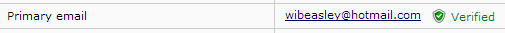

Troubleshooting REDCap API Calls
2019-10-04
Source:vignettes/TroubleshootingApiCalls.Rmd
TroubleshootingApiCalls.RmdTroubleshooting REDCap API Calls
There are many links in the pipeline between your institution’s REDCap server and the API user. When the end result is unsuccessful, this document should help narrow the location of the possible problem. The first two sections will be relevant to almost any language interacting with the API. The remaining sections are possibly relevant only to your language (e.g., Python, R, SAS, bash), or your software library (redcapAPI and REDCapR in R and PyCap in Python).
Server Configuration and Authorization
This first group of checks primarily focuses on the server and the logins accounts. Unlike later sections, REDCap administrator privileges are necessary for most of these checks.
Does the user have an account for the server? This can be verified in the
Browse Userssection of the server’sControl Center.Does the user have permissions for the specific project? This can be verified in the
User Rightssection within the project. Notice that it’s possible (but ultimately not useful) to have an account here, but not with the server, so don’t skip the previous step.Can the user log in normally through the interface? However if the username and password aren’t working, the API theoretically might still work because it uses their token instead of their password.
-
Has the user verified their account by responding to the automated email sent to them? This can be verified in the
Browse Userssection of your server’sControl Center. For each email address they’ve entered, there should be a green ‘Verified’ label and icon.
-
Has the user been granted the desired import and/or export permissions? This can be verified in the
User Rightssection or in theAPIsection (and it’sManage All Project Tokenstab) within the project. Alternatively, it can be verified in theAPI Tokenssection of the server’sControl Center.
-
Are they using the correct token? This can be verified in the
APIsection (and it’sManage All Project Tokenstab) within the project. Click the magnifying glass icon in the user’s row. Alternatively, it can be verified in theAPI Tokenssection of the server’sControl Center.
Language Agnostic API
This section group examines potential problems that occur after it leaves a working server, but before it is handled by their programming language (e.g., Python and R). Postman is a Chrome plugin recommended by several people that makes troubleshooting much more efficient.

-
Is Postman installed and operating correctly? If it helps to start with a different REDCap server, you can use this dummy project containing fake data hosted by the OUHSC BBMC. The url is
https://bbmc.ouhsc.edu/redcap/api/. There are three key-value pairs: (1) the ‘token’ is9A81268476645C4E5F03428B8AC3AA7B, (2) the ‘content’ isrecord, and (3) the ‘format’ should beCSV. When checking your own server, the token value should change, but the content and format should not. It should return five records in a CSV format. The ‘status’ should be200 OK. The result should look roughly like this. Notice the line breaks were included in the text values themselves.record_id,name_first,name_last,address,telephone,email,dob,age,ethnicity,race,sex,height,weight,bmi,comments,demographics_complete "1","Nutmeg","Nutmouse","14 Rose Cottage St. Kenning UK, 323232","(432) 456-4848","nutty@mouse.com","2003-08-30",10,1,2,0,5,1,400,"Character in a book, with some guessing",2 "2","Tumtum","Nutmouse","14 Rose Cottage Blvd. Kenning UK 34243","(234) 234-2343","tummy@mouse.comm","2003-03-10",10,1,6,1,6,1,277.8,"A mouse character from a good book",2 "3","Marcus","Wood","243 Hill St. Guthrie OK 73402","(433) 435-9865","mw@mwood.net","1934-04-09",79,0,4,1,180,80,24.7,"completely made up",2 "4","Trudy","DAG","342 Elm Duncanville TX, 75116","(987) 654-3210","peroxide@blonde.com","1952-11-02",61,1,4,0,165,54,19.8,"This record doesn't have a DAG assigned So call up Trudy on the telephone Send her a letter in the mail",2 "5","John Lee","Walker","Hotel Suite New Orleans LA, 70115","(333) 333-4444","left@hippocket.com","1955-04-15",58,1,4,1,193.04,104,27.9,"Had a hand for trouble and a eye for cash He had a gold watch chain and a black mustache",2 Can an administrator query the API successfully with Postman with the admin token? As an administrator, create an account for yourself, and verify that your token works on your server and project.
Can an administrator query the API successfully with Postman with the user’s token? Use Postman as before, but replace your token with the user’s token. Once the whole problem is solved, reissue new API tokens to both you and the user.
Can an user query the API successfully with Postman with the their own token? The values they enter should be exactly the same as those entered in the previous step. A failure here (assuming the previous step was successful) suggests a network or firewall issue. If the server is behind your institution’s firewall, verify the user is connecting successfully through the VPN.
-
Can a user query the API with cURL? cURL is a command line tool that’s underneath a lot of libraries. If it’s installed correctly on your location machine, it can be executed from the terminal or command line.
curl -X POST -H "Cache-Control: no-cache" -F "token=9A81268476645C4E5F03428B8AC3AA7B" -F "content=record" -F "format=csv" "https://bbmc.ouhsc.edu/redcap/api/"
Exporting from REDCap to R
There are several ways to call REDCap’s API from R. The packages redcapAPI and REDCapR both rely on the httr package, which calls the curl package.
-
Is httr installed on the user’s local machine? If so, running
library(httr)should not produce any error messages if you’re starting with a fresh session of R: Does the user have the most recent version of httr? There are several ways to do this, but the easiest is probably to run
update.packages(ask=FALSE, repos="http://cran.rstudio.com"). The optional argumentaskprevents the user from needing to respond ‘Y’ to each outdated package.-
Can the user query a test project using httr? Both the redcapAPI and REDCapR packages employ something similar to the following function in httr. If you’re curious, here is the relevant source code for redcapAPI and REDCapR.
If this check fails, consider attempting again with the uri and token used above in the Postman example.
This check avoids checking the SSL certificate in order to simplify the troubleshooting. SSL verification is supported by default in the PyCap, redcapAPI, and REDCapR packages.
redcap_uri <- "https://bbmc.ouhsc.edu/redcap/api/" token <- "9A81268476645C4E5F03428B8AC3AA7B" raw_text <- RCurl::postForm( uri = redcap_uri , token = token , content = 'record' , format = 'csv' , type = 'flat' , rawOrLabel = 'raw' , exportDataAccessGroups = 'true' , .opts = RCurl::curlOptions(ssl.verifypeer=FALSE) )Alternatively, you can try using the
httrpackage, which usesRCurlunderneath.REDCapRand a recent fork ofredcapactually useshttrdirectly, instead ofRCurl. As of 2014-07-06, this works with the Windows 8 version for libcurl (which is underneath `RCurl), but not with some Linux versions; in this case pass the location of the SSL cert file.post_body <- list( token = token, content = 'record', format = 'csv', type = 'flat', rawOrLabel = 'raw', exportDataAccessGroups = 'true' ) raw_text <- httr::POST( url = redcap_uri, body = post_body, config = httr::config(ssl.verifypeer=FALSE), httr::verbose() #Remove this line to suppress the frequent console updates. ) -
Can the user query a subset of their project using RCurl? This step is like the previous one, but with two differences. First, it’s using their REDCap project (instead of the test project). Second, it pulls fewer records, and a smaller collection of fields. Subsetting can help troubleshoot by avoiding (and thus identifying) cells with problematic values.
Notice this call to
RCurl::postForm()now passes values to therecordsandfieldsparameters. Also notice the value is a single long string, rather a vector of shorter strings (which is more natural to most R users).redcap_uri <- "https://the.urlofyourinsitution.edu/api/" token <- "your-secret-token" records_collapsed <- "1,2,3" # Assumes dataset contains ID values of 1-3. fields_collapsed <- "record_id,name_first,name_last" # Assumes dataset contains these variables. raw_text <- RCurl::postForm( uri = redcap_uri , token = token , content = 'record' , format = 'csv' , type = 'flat' , rawOrLabel = 'raw' , exportDataAccessGroups = 'true' , records = records_collapsed , fields = fields_collapsed , .opts = RCurl::curlOptions(ssl.verifypeer=FALSE) ) -
Can the user query an entire project using RCurl? There are two advantages of trying a subset of the data. First, small datasets avoid the time-out errors that plague large datasets. Second, it may avoid problematic values being passed through the pipeline. If the current check fails but the previous check succeeds, then experiment with different expanses of records and fields. This should help determine which values are causing the problems, or if there’s simply too much data being pulled in one pass.
If the desired dataset is too large, consider if you can prune unnecessary records or fields. If not, one solution is to pull smaller, multiple batches using the API, then reassemble them. The
redcap_read()function in REDCapR does this automatically, and allows the user to specify abatch_size.redcap_uri <- "https://the.urlofyourinsitution.edu/api/" token <- "your-secret-token" records_collapsed <- NULL fields_collapsed <- NULL raw_text <- RCurl::postForm( uri = redcap_uri , token = token , content = 'record' , format = 'csv' , type = 'flat' , rawOrLabel = 'raw' , exportDataAccessGroups = 'true' , records = records_collapsed , fields = fields_collapsed , .opts = RCurl::curlOptions(ssl.verifypeer=FALSE) )
Exporting from REDCap to R, using REDCapR
REDCapR is a package that uses cURL (via httr) to communicate with REDCap, and wraps convenience functions around it to reduce the size and complexity of the user’s code. The package’s basic functions are demonstrated in a vignette and are documented in its reference manual (a downloadable pdf of the functions are also available).
If you’re not using REDCapR, you can skip this section and proceed to ‘Importing into REDCap from R’ below.
-
Is REDCapR installed on the user’s machine? Currently the easiest way to install REDCapR is with the devtools. The follow code installs devtools, then installs REDCapR.
-
Does REDCapR load successfully on the user’s machine? If so, running
library(REDCapR)should produce the following output if you’re starting with a fresh session of R: -
Can the user export from an example project? This is the same fake data hosted by the OUHSC BBMC as in the previous section.
library(REDCapR) #Load the package into the current R session. uri <- "https://bbmc.ouhsc.edu/redcap/api/" token <- "9A81268476645C4E5F03428B8AC3AA7B" redcap_read(redcap_uri=uri, token=token)$dataThe previous code should produce similar output. Notice there are five rows and the columns will wrap around if your console window is too narrow.
5 records and 1 columns were read from REDCap in 0.41 seconds. Starting to read 5 records at 2014-06-27 17:19:49 Reading batch 1 of 1, with ids 1 through 5. 5 records and 16 columns were read from REDCap in 0.42 seconds. record_id name_first name_last address telephone email 1 1 Nutmeg Nutmouse 14 Rose Cottage St.\nKenning UK, 323232 (432) 456-4848 nutty@mouse.com 2 2 Tumtum Nutmouse 14 Rose Cottage Blvd.\nKenning UK 34243 (234) 234-2343 tummy@mouse.comm 3 3 Marcus Wood 243 Hill St.\nGuthrie OK 73402 (433) 435-9865 mw@mwood.net 4 4 Trudy DAG 342 Elm\nDuncanville TX, 75116 (987) 654-3210 peroxide@blonde.com 5 5 John Lee Walker Hotel Suite\nNew Orleans LA, 70115 (333) 333-4444 left@hippocket.com dob age ethnicity race sex height weight bmi 1 2003-08-30 10 1 2 0 5.00 1 400.0 2 2003-03-10 10 1 6 1 6.00 1 277.8 3 1934-04-09 79 0 4 1 180.00 80 24.7 4 1952-11-02 61 1 4 0 165.00 54 19.8 5 1955-04-15 58 1 4 1 193.04 104 27.9 comments 1 Character in a book, with some guessing 2 A mouse character from a good book 3 completely made up 4 This record doesn't have a DAG assigned\n\nSo call up Trudy on the telephone\nSend her a letter in the mail 5 Had a hand for trouble and a eye for cash\n\nHe had a gold watch chain and a black mustache demographics_complete 1 2 2 2 3 2 4 2 5 2 -
Can the user export from their own project? The code is similar to the previous check, but the
uriandtokenvalues will need to be modified.library(REDCapR) #Load the package into the current R session, if you haven't already. redcap_uri <- "https://the.urlofyourinsitution.edu/api/" token <- "your-secret-token" redcap_read(redcap_uri=uri, token=token)$dataAlternatively, a
redcap_projectobject can be declared initially, which makes subsequent calls cleaner when the token and url are required only the when the object is declared.library(REDCapR) #Load the package into the current R session, if you haven't already. uri <- "https://bbmc.ouhsc.edu/redcap/api/" token <- "9A81268476645C4E5F03428B8AC3AA7B" project <- redcap_project$new(redcap_uri=uri, token=token) ds_three_columns <- project$read(fields=c("record_id", "sex", "age"))$data ids_of_males <- ds_three_columns$record_id[ds_three_columns$sex==1] ids_of_minors <- ds_three_columns$record_id[ds_three_columns$age < 18] ds_males <- project$read(records=ids_of_males, batch_size=2)$data ds_minors <- project$read(records=ids_of_minors)$data Is the export operation still unsuccessful using REDCapR? If so the “Can the user query a entire REDCap project using RCurl?” check succeeded, but the REDCapR checks did not, consider posting a new GitHub issue to the package developers.
Exporting from REDCap to R, using redcapAPI
redcapAPI is a package that uses cURL (via httr) to communicate with REDCap, and wraps convenience functions around it to reduce the size and complexity of the user’s code.
If you’re not using redcapAPI, you can skip this section and proceed to ‘Importing into REDCap from R’ below. More specific discussion about redcapAPI can be found at the package’s wiki.
-
Is redcapAPI installed on the user’s machine? Currently, the easiest way to install
redcapAPIis from CRAN.Developmental versions may be available on GitHub.
-
Does redcapAPI load successfully on the user’s machine? If so, running
library(redcapAPI)should produce the following output if you’re starting with a fresh session of R: -
Can the user export from an example project? This is the same fake data hosted by the OUHSC BBMC as in the previous section.
library(redcapAPI) #Load the package into the current R session. rcon <- redcapConnection( url = "https://bbmc.ouhsc.edu/redcap/api/", token = "9A81268476645C4E5F03428B8AC3AA7B" ) exportRecords(rcon)The previous code should produce similar output. Notice there are five rows and the columns will wrap around if your console window is too narrow.
record_id name_first name_last address telephone email 1 1 Nutmeg Nutmouse 14 Rose Cottage St.\nKenning UK, 323232 (432) 456-4848 nutty@mouse.com 2 2 Tumtum Nutmouse 14 Rose Cottage Blvd.\nKenning UK 34243 (234) 234-2343 tummy@mouse.comm 3 3 Marcus Wood 243 Hill St.\nGuthrie OK 73402 (433) 435-9865 mw@mwood.net 4 4 Trudy DAG 342 Elm\nDuncanville TX, 75116 (987) 654-3210 peroxide@blonde.com 5 5 John Lee Walker Hotel Suite\nNew Orleans LA, 70115 (333) 333-4444 left@hippocket.com dob age ethnicity race sex height weight bmi 1 2003-08-30 10 1 2 0 5.00 1 400.0 2 2003-03-10 10 1 6 1 6.00 1 277.8 3 1934-04-09 79 0 4 1 180.00 80 24.7 4 1952-11-02 61 1 4 0 165.00 54 19.8 5 1955-04-15 58 1 4 1 193.04 104 27.9 comments 1 Character in a book, with some guessing 2 A mouse character from a good book 3 completely made up 4 This record doesn't have a DAG assigned\n\nSo call up Trudy on the telephone\nSend her a letter in the mail 5 Had a hand for trouble and a eye for cash\n\nHe had a gold watch chain and a black mustache demographics_complete 1 2 2 2 3 2 4 2 5 2 -
Can the user export from their own project? The code is similar to the previous check, but the
uriandtokenvalues will need to be modified. Is the export operation still unsuccessful using redcapAPI? If so the “Can the user query a entire REDCap project using RCurl?” check succeeded, but the redcapAPI checks did not, consider posting a new GitHub issue to the package developers.
Importing into REDCap from R
Troubleshooting import operations is trickier than export operations for two major reasons. First, the database potentially persists your import mistakes. In contrast, repeatedly exporting data won’t affect subsequent reads. Considering cloning the REDCap project for testing until the problem is resolved. Remember to create a new token (because they’re not automatically created when projects are cloned, even when users are copied), and to modify your code’s token to point to the new testing clone.
The second reason why importing can be trickier is because the schema (e.g., the names and data types) of your local dataset must match the project’s schema. This section will be expanded in the future. Current recommendations include checking if you can write to simpler projects (perhaps with 1 ID field and 1 string field), and progressively moving to mimic the problematic project’s schema and dataset. Also, consider exporting the dataset to your machine, and look for differences. Note that you cannot import calculated fields into REDCap.
Can the user import the entire project?
Can the user import a subset of the project?
Other software for communication and automation with REDCap
REDCap is used in many environments, and it’s not surprising that a lot of libraries have been developed that cater to different scenarios and languages. An active list is maintained at REDCap-Tools. In an entry needs to be added, please notify us; instructions are found at the bottom of the page.
Other good resources
-
The basic API documentation is available on your REDCap server, typically at
http://<*your server name*>/redcap/api/help - If you have access to the REDCap wiki, some newer examples might exist at https://community.projectredcap.org/articles/462/api-examples.html. The official documentation can be found on the
API Help Pageand `API Examples’ pages on the REDCap wiki (i.e., https://community.projectredcap.org/articles/456/api-documentation.html and https://community.projectredcap.org/articles/462/api-examples.html). If you do not have an account for the wiki, please ask your campus REDCap administrator to send you the static material. - Scott Burns, the primary developer of PyCap has a good intro at http://sburns.org/2013/07/22/intro-to-redcap-api.html
- Benjamin Nutter, the primary developer of redcapAPI has a good wiki at https://github.com/nutterb/redcapAPI/wiki
In addition to this troubleshooting document, REDCapR has a vignette that covers its basic operations.
Document Info
This document is primarily based on REDCap version 6.0.2 and was last updated 2018-07-09. A development version of the document is available on GitHub: https://ouhscbbmc.github.io/REDCapR/articles/TroubleshootingApiCalls.html.